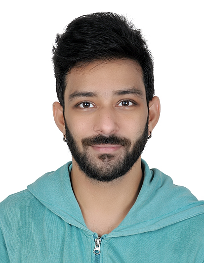

Avinash Dakshinamurthy
Bsc.Psy, MA.Criminology, PhD
Personal Profile
Seasoned professional with over 18 years of experience in the field of IT, BPO and Mental Health. I also have experience working in the field of creativity with expert level knowlwedge over Autodesk Entertainment Creation Suite and Adobe Creative Suite.
Education
- PhD in Forensic Psychology - Tamil Nadu Open University (2025 - Ongoing)
- MA in Criminology - Tamil Nadu Open University (2025 - 2027)
- BSc in Psychology - Madras University (2021 - 2024)
- Diploma in Computer Engineering - Panimalar Polytechnic College
Work Experience
- Hewlett Packard Global Soft Pvt. Ltd. - 2007 until 2011
- IBM Daksh (Now Concentrix) - 2011 until 2012
- CSS corp (Now Movate) - 2012 until 2021
- Sutherland Global Solutions - 2021 until 2025
This is a simple public profile outlining my skillsets, education and what I do in general, all rights reserved.